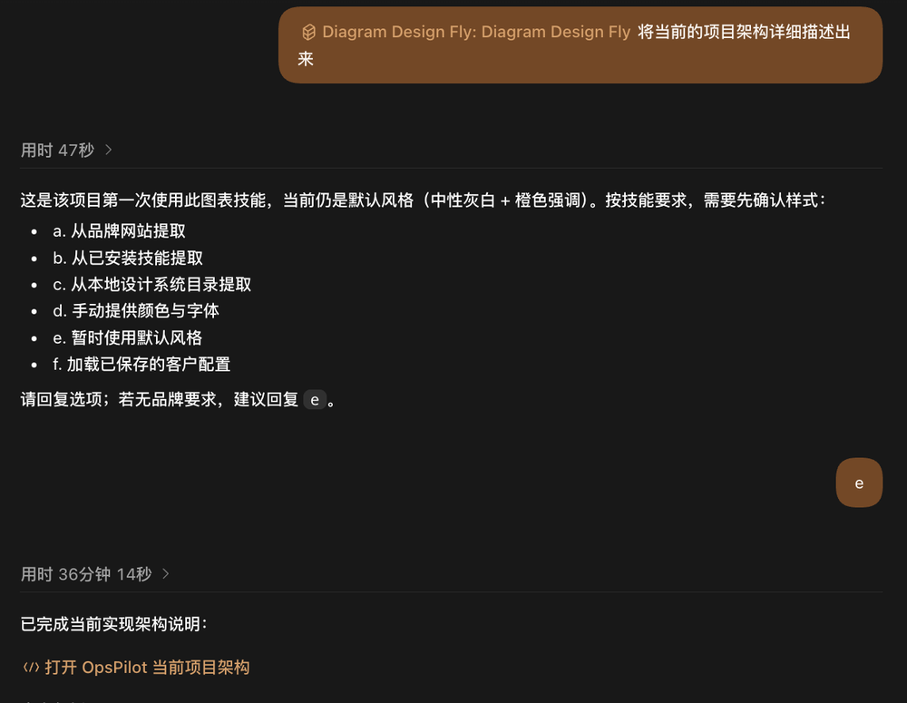

Flow mode · 纯 CSS · 零 JavaScript
会流动的架构图
这是 diagram-design 的一个 fork， 加了一件事：当图承载了顺序 —— 管线、生命周期、循环、跨时间的计划 —— 它默认就会动起来，并且能一条命令渲染成 MP4 / WebM / GIF。
下面每一张都是实时播放的 HTML，不是录屏。整个动效层是纯 CSS，
删掉它剩下的仍是一张完整的静态图 —— 打印、prefers-reduced-motion、
PNG 导出都会回到那一帧。
真实案例
一句提示词，一整页架构
来自一个真实仓库 —— 一个 Go + React 的 SRE 控制台。除了装好 skill 之外没有任何额外配置， 完整的提示词只有一句：
- 1 在 Codex 或 Claude Code 里调用
diagram-design-fly - 2 输入这一句 —— 不必提动效，有顺序的主题默认就会动
- 3 首次进新项目它会问品牌样式，没有要求就回
e
将当前的项目架构详细描述出来

e没提动效、没指定图型、没说版面、没给配色。它读了代码库，返回的是一整页三张图。 更值得注意的是它没画什么：真实连接器、IAM 审批、持久化任务队列这些 规划中但尚未建成的部分，被虚线标为「演示或可选路径」，而不是画成现有能力。
有顺序的图型
39 种里，17 种默认会动
判据不是「这是什么图型」，而是「这张图有没有承载一条读者要走的顺序」。 有的就上 flow 加阶段序号；没有的 —— 柱状图、雷达图、ER 图 —— 保持静态， 因为在那里加动效只是装饰。
原理
一个机制，两个时钟
全部动效都是一个动画化的 stroke-dashoffset —— 没有 offset-path、
没有 <animateMotion>、没有逐帧 JavaScript。
视频渲染器不重新实现动画，它运行图自己的样式表然后拨动时钟，所以视频不可能和网页漂移。
安装
一次克隆，两个宿主
Claude Code 和 Codex 读的是同一个目录：
git clone https://github.com/huangzhuxing/diagram-design-fly.git ~/code/diagram-design-fly ln -s ~/code/diagram-design-fly/skills/diagram-design-fly ~/.claude/skills/diagram-design-fly ln -s ~/code/diagram-design-fly/skills/diagram-design-fly ~/.codex/skills/diagram-design-fly
然后用大白话提要求就行。渲染成视频是可选的、手动的：
cd remotion && npm install node scripts/render-video.mjs 你的图.html --format gif